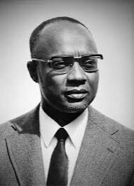

Amílcar Cabral (1924-1973)
Cabral was a revolutionary leader, agronomist, and anti-colonial theorist from Guinea-Bissau and Cape Verde. He played a central role in the struggle for independence from Portuguese colonial rule in West Africa. As the founder of the African Party for the Independence of Guinea and Cape Verde (PAIGC), Cabral led a successful armed resistance based on grassroots mobilization, emphasizing the connection between land, liberation, and identity.
Cabral viewed control over land and agriculture as essential to true freedom, arguing that colonialism disrupted African self-sufficiency and cultural integrity. He believed that reclaiming land and dignity were intertwined, famously stating, “We are fighting so that our people may recover the right to govern themselves in their own land.” His work continues to inspire global movements for land justice, decolonization, and self-determination.